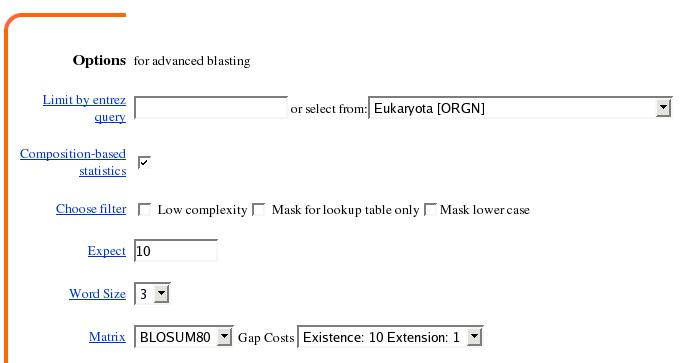

Abstract: In this section, we will explore the problems of protein classification the identification of protein families. It is possible to classify proteins on the basis of either sequence or structural similarity. Here, we will be focusing on sequence-based classification. In one way or another, all sequence-based classification methods involve the production of protein sequence alignments (discussed in the preceding "Sequence Comparison" sections of the course). Historically, the earliest attempts at sequence-based classification used alignments of entire sequences with one another (global alignments). Later, proteins were classified based on the presence of conserved patterns or motifs of amino acids. Still another approach is to classify proteins based on domain profiles. Many databases exist which classify proteins using one or more of these approaches. A couple of the more well-known of these are:
Pfam and
PROSITE.
The underlying assumptions that motivate sequence-based protein classification are that proteins with similar sequences are evolutionarily related, and therefore share common structure and/or function. While there are certainly exceptions, these assumptions hold up fairly well. Thus, when faced with a new protein sequence of unknown structure and function, one of the first questions one is likely to try to answer is: Does my unknown protein have sufficient sequence similarity to any protein(s) of known structure/function to suggest an evolutionary relationship? If the answer is yes, you may be able to infer something about the structure or function of the unknown protein sequence. It cannot be emphasized enough, however, that such inferences must be verified through laboratory experiments.
This section will introduce you to some of the programs and databases that can help you address the question of protein sequence similarity, and help you predict the function of your sequence. We will look at both EMBOSS and web-based applications.
The standard way of using EMBOSS is via command line interaction on a UNIX computer system. You will be using EMBOSS on the system hatch.health.unm.edu and you should have received login information for xxx when you signed up for Biomed505. In addition to the command line interface, there are also several graphical interfaces to EMBOSS. One of these is EMBOSS-GUI, a web-based front end to EMBOSS. The exercises for the "Introduction to Sequence Analysis" section of Biomed505 are written for users of the command line interface. You may use EMBOSS-GUI if you prefer, however there are no detailed instructions to help you. A brief introduction to EMBOSS-GUI is available. For the most part, the input to the command line programs is exactly mirrored by EMBOSS-GUI's web browser forms and the use of EMBOSS-GUI should be fairly straight forward.
Questions you should answer as you work through the exercises are indicated by Question: tags, which also serve as hyperlinks to the corresponding answers (where available).
Typographical conventions:
Regular web links look like this
Input that you should enter verbatim in web page forms, or links/buttons you should click on web pages look like this
Sections representing command-line interaction are represented as in the following example:
[unix]# ls foo [Enter]
ls: foo: No such file or directory
where...
the unix propmt is represented as: [unix]# ,
characters in this font are commands to be typed into the computer verbatim,
characters in this font are names or identifiers (Eg. file/directory names or sequence accession numbers),
words in square brackets: [Ctrl] indicate a key to be pressed, and
program output is represented in this font
The above example means "at the UNIX prompt, type ls followed by foo (a directory name, which may be different in your case), then press Enter". The ouput of the command is supposed to be "ls: foo: No such file or directory". Output will often be truncated and this will be indicated using three horizontal or vertical dots.
| Pattern Matching |
| In many cases, a fairly small set of amino acid residues confer particular functional properties to a family of proteins. In such cases, a "fingerprint" can usually be defined which allows one to recognize proteins of the same family. For example, the sequence GXGXXG (where G=glycine and X=any amino acid) is such a fingerprint that defines a GTP binding site. Searching for a predefined string of characters in a sequence is called Pattern Matching. Sequence patterns are also referred to as motifs. |
| 1. Use the patmatmotifs program to search the PROSITE motif database with a protein sequence. |
| PROSITE is a database of protein families and domains, and patterns/motifs that identify them. For a description of PROSITE, we can do no better than to quote the PROSITE user's documentation:
PROSITE is a method of determining what is the function of uncharacterized proteins translated from genomic or cDNA sequences. It consists of a database of biologically significant sites and patterns formulated in such a way that with appropriate computational tools it can rapidly and reliably identify to which known family of protein (if any) the new sequence belongs.
In some cases the sequence of an unknown protein is too distantly related to any protein of known structure to detect its resemblance by overall sequence alignment, but it can be identified by the occurrence in its sequence of a particular cluster of residue types which is variously known as a pattern, motif, signature, or fingerprint. These motifs arise because of particular requirements on the structure of specific region(s) of a protein which may be important, for example, for their binding properties or for their enzymatic activity. These requirements impose very tight constraints on the evolution of those limited (in size) but important portion(s) of a protein sequence. To paraphrase Orwell, in Animal Farm, we can say that "some regions of a protein sequence are more equal than others" ! |
We will search the protein sequence of the human NPY1 receptor with which we were working in the last set of exercises. However, to do so, we will retrieve the sequence from the SwissProt database.
[unix]# patmatmotifs sp:NY1R_HUMAN -outfile stdout [Enter]
Search a PROSITE motif database with a protein sequence
########################################
# Program: patmatmotifs
# Rundate: Mon Aug 30 13:12:37 2004
# Report_format: dbmotif
# Report_file: stdout
########################################
#=======================================
#
# Sequence: NY1R_HUMAN from: 1 to: 384
# HitCount: 1
#
# Full: No
# Prune: Yes
# Data_file: /usr/local/emboss/share/EMBOSS/data/PROSITE/prosite.lines
#
#=======================================
Length = 17
Start = position 126 of sequence
End = position 142 of sequence
Motif = G_PROTEIN_RECEP_F1_1
CVSITVSIFSLVLIAVERHQLIINPRG
| |
126 142
#---------------------------------------
#---------------------------------------
This tells us that NY1R has a match to the PROSITE motif G_PROTEIN_RECEP_F1_1. Click here to visit the PROSITE website and learn more about this motif. You can also use the -full command-line option to get a full description of matching patterns included in the output.
It is common to find that a search of the PROSITE database against a protein sequence will report many matches to motifs that identify sites of post-translational modification, such as glycolsylation, myristylation and phosphorylation sites. Reports of these are often unwanted and are not reported by default. You can turn reporting of these short motifs on by giving the '-noprune' option on the command-line:
[unix]# patmatmotifs sp:NY1R_HUMAN -noprune -outfile stdout [Enter]
Search a PROSITE motif database with a protein sequence
########################################
# Program: patmatmotifs
# Rundate: Mon Aug 30 13:22:53 2004
# Report_format: dbmotif
# Report_file: stdout
########################################
#=======================================
#
# Sequence: NY1R_HUMAN from: 1 to: 384
# HitCount: 19
#
# Full: No
# Prune: No
# Data_file: /usr/local/emboss/share/EMBOSS/data/PROSITE/prosite.lines
#
#=======================================
Length = 4
Start = position 2 of sequence
End = position 5 of sequence
Motif = ASN_GLYCOSYLATION
MNSTLFSQVE
| |
2 5
Length = 4
Start = position 11 of sequence
End = position 14 of sequence
Motif = ASN_GLYCOSYLATION
FSQVENHSVHSNFS
| |
11 14
Length = 4
Start = position 17 of sequence
End = position 20 of sequence
Motif = ASN_GLYCOSYLATION
HSVHSNFSEKNAQL
| |
17 20
.
.
.
Length = 7
Start = position 341 of sequence
End = position 347 of sequence
Motif = TYR_PHOSPHO_SITE
NFCDFRSRDDDYETIAM
| |
341 347
Length = 6
Start = position 54 of sequence
End = position 59 of sequence
Motif = MYRISTYL
AVIILGVSGNLALIII
| |
54 59
Length = 17
Start = position 126 of sequence
End = position 142 of sequence
Motif = G_PROTEIN_RECEP_F1_1
CVSITVSIFSLVLIAVERHQLIINPRG
| |
126 142
#---------------------------------------
#---------------------------------------
|
| 2. Use the pscan program to find matches between a query protein sequence and the motifs or elements in the PRINTS database. |
| PRINTS is a database of diagnostic protein signatures, or fingerprints. Fingerprints are groups of conserved motifs or elements that together form a diagnostic signature for particular protein families. Usually the motifs or elements do not overlap, but are separated along a sequence. They may, however, be contiguous in 3D-space. Fingerprints can encode protein folds and functionalities more flexibly and powerfully than can single motifs. It is diagnostically more powerful if an uncharacterized sequence matches all motifs or elements of a particular family than it is if it matches a single motif. |
[unix]# pscan sp:NY1R_HUMAN -emin 1 -emax 10 -outfile stdout [Enter]
Scans proteins using PRINTS
CLASS 1
Fingerprints with all elements in order
Fingerprint NRPEPTIDEY1R Elements 7
Accession number PR01013
Neuropeptide Y1 receptor signature
Element 1 Threshold 92% Score 100%
Start position 32 Length 16
Element 2 Threshold 82% Score 94%
Start position 176 Length 16
Element 3 Threshold 67% Score 95%
Start position 192 Length 17
Element 4 Threshold 98% Score 98%
Start position 242 Length 19
Element 5 Threshold 84% Score 100%
Start position 288 Length 12
Element 6 Threshold 100% Score 100%
Start position 325 Length 14
Element 7 Threshold 96% Score 100%
Start position 338 Length 18
CLASS 2
All elements match but not all in the correct order
Fingerprint GPCRRHODOPSN Elements 7
Accession number PR00237
Rhodopsin-like GPCR superfamily signature
Element 1 Threshold 54% Score 66%
Start position 42 Length 25
Element 2 Threshold 49% Score 73%
Start position 75 Length 22
Element 3 Threshold 48% Score 63%
Start position 120 Length 23
Element 4 Threshold 50% Score 80%
Start position 154 Length 22
Element 5 Threshold 51% Score 64%
Start position 212 Length 24
Element 6 Threshold 42% Score 73%
Start position 261 Length 25
Element 7 Threshold 46% Score 65%
Start position 302 Length 27
CLASS 3
Not all elements match but those that do are in order
CLASS 4
Remaining partial matches
As should be obvious from this output, pscan reports various classes of matches:
- Matches where all elements of a motif exist in the correct order
- Matches where all elements exist but some are in the incorrect order
- Matches where some elements match and are in the correct order
- Miscellaneous matches
Question: What new information has pscan given us that we did not get from patmatmotifs?
|
| 3. Use the patmatdb program to search protein sequences with a motif. |
| The two programs we have just looked at search a sequence against an entire database of patterns. It is sometimes useful to be able to flip this around and search a number of sequences with just a single motif. This is what patmatdb does.
Patterns for patmatdb are based on the format used by the PROSITE database (with the exceptions noted below). The PROSITE pattern definition from the PROSITE documentation follows:
- The standard IUPAC one-letter codes for the amino acids are used
- The symbol `x' is used for a position where any amino acid is accepted
- Ambiguities are indicated by listing the acceptable amino acids for a given position, between square parentheses `[ ]'. For example: [ALT] stands for Ala or Leu or Thr
- Ambiguities are also indicated by listing between a pair of curly brackets `{ }' the amino acids that are not accepted at a given position. For example: {AM} stands for any amino acid except Ala and Met
- Each element in a pattern is separated from its neighbor by a `-'. (Optional in patmatdb).
- Repetition of an element of the pattern can be indicated by following that element with a numerical value or a numerical range between parenthesis. Examples: x(3) corresponds to x-x-x, x(2,4) corresponds to x-x or x-x-x or x-x-x-x
- When a pattern is restricted to either the N- or C-terminal of a sequence, that pattern either starts with a `<' symbol or respectively ends with a `>' symbol
- A period ends the pattern. (Optional in patmatdb)
For example, the pattern [DE](2)HS{P}X(2)PX(2,4)C means: Two Aspartates or Glutamates in any order followed by Histidine, Serine, any residue other then Proline, then two of any residue followed by Proline followed by two to four of any residue followed by Cysteine. |
Here we will search all the Swissprot database entries beginning with 'PAX' with a motif:
[unix]# patmatdb sp:PAX* -motif 'ST[TY]S' -outfile stdout [Enter]
Search a protein sequence with a simple motif
########################################
# Program: patmatdb
# Rundate: Mon Aug 30 17:22:27 2004
# Report_format: dbmotif
# Report_file: stdout
########################################
#=======================================
#
# Sequence: PAX8_CANFA from: 1 to: 459
# HitCount: 1
#
# Motif: ST[TY]S
#
#=======================================
Length = 4
Start = position 178 of sequence
End = position 181 of sequence
SDSLGSTYSINGLL
| |
178 181
#---------------------------------------
#---------------------------------------
#=======================================
#
# Sequence: PAX8_HUMAN from: 1 to: 450
# HitCount: 1
#
# Motif: ST[TY]S
#
#=======================================
Length = 4
Start = position 178 of sequence
End = position 181 of sequence
SDSLGSTYSINGLL
| |
178 181
.
.
.
#---------------------------------------
#---------------------------------------
#=======================================
#
# Sequence: PAXI_HUMAN from: 1 to: 591
# HitCount: 1
#
# Motif: ST[TY]S
#
#=======================================
Length = 4
Start = position 13 of sequence
End = position 16 of sequence
LADLESTTSHISKR
| |
13 16
#---------------------------------------
#---------------------------------------
|
| Profile Analysis |
| Profile analysis is a very powerful technique for characterizing the putative structure and function of a protein sequence. Profile analysis is a sequence comparison method for finding or aligning distantly related sequences in which a new sequence is optimally aligned to a family of similar sequences. The comparison uses a scoring matrix produced from an existing optimal alignment of a group of similar protein sequences. The group, or "family", of similar sequences are first aligned together to create a multiple sequence alignment. The information in the multiple sequence alignment is then represented as a table of position-specific symbol comparison values and gap penalties. This table is called a profile. Basically, a profile is a numerical representation of a multiple sequence alignment. The similarity of new sequences to an existing profile can be tested by comparing each new sequence to the profile using a modification of the Smith/Waterman algorithm. |
| 1. Use the prophecy program to create a profile from a multiple sequence alignment. |
| First, we must produce the multiple alignment from which the profile will be built. As you should now be familiar with these steps, we will go through them fairly quickly. Obtain the sequences:
[unix]# seqret 'sp:ops2_*' -outseq ops2s.fasta [Enter]
Create the multiple alignment:
[unix]# emma -sequence ops2s.fasta -outseq ops2s.aln -dendoutfile ops2s.dnd [Enter]
Now, run prophecy to create the profile:
[unix]# prophecy -sequence ops2s.aln-type G -datafile Epprofile -open 3.0 -extension 0.3 -name "ops2 profile" -outfile ops2.prophecy [Enter]
prophecy can build three different types of profiles: Frequency, Gribskov and Henikoff. In this example, we are building a Gribskov profile, and for this we need to provide a datafile which is similar to a substitution matrix. The other input parameters are the scores to be used for opening and extending gaps. The resulting profile is saved to the file ops2.prophecy.
|
| 2. Use the prophet program to compare a sequence to a profile. |
We'll compare the Xenopus sequence to the profile we just created.
[unix]# prophet -sequence sp:OPSD_XENLA -infile ops2.prophecy -gapopen 1.0 -gapextend 0.1 -outfile stdout [Enter]
Gapped alignment for profiles
Local: Consensus vs OPSD_XENLA
Score: 2242.20
Consensus 1 M.ERS.HLPETP.DAAAL.SAARF.DAQSGGNASVLDNVL.P.EM 38
| : : : |:| ::: : : : : :: |:: | |: | ::
OPSD_XENLA 1 MNG.GTE..EGPNFYV.VPM.M.MSNKTG.GVV.V...VRSPFDY 34
Consensus 39 APLVHPHWSRF.APMNPMWHKILGLFTLILGIISCLG...NGLVI 79
:: ::: : : :|: :::|: ::::|::: || | :::
OPSD_XENLA 35 PQ.Q.QYYL.LAE..EPWQYSALAAYMFLLILL..LGLPINFMTL 72
Consensus 80 Y.IFAGT...KSLRTPANLLVLNLAFSD..FCMMASMSPV.M.AI 116
: : | |:|||| |:::|||:|:: : |:: :::| | ::
OPSD_XENLA 73 FVT...TIQHKKLRTPLNYILLNLVFANHFM.MVLCGFTVTMYTS 113
Consensus 117 ..NCFYGETWVLGPLGC..D.IYAAL.GSLFGCVSIWSMCMIAFD 155
::| :::|| || : ::|:| | | |::||::::|::
OPSD_XENLA 114 MHGYF....FIFGPTGCYIEGFFATLGG...GEVALWSLVVLAVE 151
Consensus 156 RYNVIVKGINGTPLTIKTAIMKILFIWMMAVFWTLMPLF.GIWSR 199
|| |::|:::: ::::::||| ::|:|:||:: : :||| |||
OPSD_XENLA 152 RYIVVCKPMANFRFGENHAIMGVAFTWIMALSCAAPPLFGW.WSR 195
Consensus 200 YVPEGNLTSCSIDYLT.R.DWNPRSYL.ITYFLFV.YFFPLFIIC 240
|:|||: :||::||:| : : |: |:: |:::| : :||::|:
OPSD_XENLA 196 YIPEGMQCSCGVDYYTLKPEVNNESFVIY.YMFIVHFTIPLIVIF 239
Consensus 241 YSY.WFIIAAVAAHEKAMRDQAKKMNVKSLRSNEDQCAQSA.EIR 283
::| ::::::: :|:| ::|:: : : :: :|:| : :
OPSD_XENLA 240 FCYGRLLCTVK..KEAAAQQQESLT.T..T..TT...TQKAEK.K 273
Consensus 284 .LAKVALTTISLWFMAWTPYAIIAY.FGLFGIDGA.LTP.LTT.I 323
:::::::::::::::|:|||::|: : :|: :|: ::| ::|
OPSD_XENLA 274 EVTRMVVIMVVFFLICWVPYAYVAFYI.IFTHQGSNFGPVFMTVP 317
Consensus 324 WGALFAKASSCYNPIVYAISHPKYRA.ALKEKCPMCVCG.ETDEP 366
:|:|||:|::|||::| : ::::| :: :: ::|| :: |
OPSD_XENLA 318 .PAFFAKSSAIYNPVIYIVLNKQFRNCLI...ITTLCCGKNP..P 356
Consensus 367 .SPDAPQSDATTTSEAAS.KAP.AAIEFPDDNIFIVNSSVNGPTV 408
::::::|:||:::||:| ::: : : |:
OPSD_XENLA 357 FGDEDGSSAATSKTEASSVSSSQV..........VS.SP...... 384
Consensus 409 KREKIVQRNPINVRLGIKIEPRDSRAA 435
: : :|
OPSD_XENLA 385 ...............P.......P.PA 388
In the output from prophet, vertical bars (|) represent residues that are identical between the input sequence and the profile consensus, while colons (:) represent conservative substitutions. Hopefully, it is apparent that aligning members of a family can reveal conserved regions that may be important for structure and/or function.
prophet compares a sequence to a GRIBSKOV or a HENIKOFF profile produced by prophecy, it will not use the simple FREQUENCY matrices produced by prophecy. If you have a FREQUENCY matrix, you should use the program prophit to compare sequences to it.
|
| Position-Specific Iterated (PSI)-BLAST |
| In the "Sequence Comparison - Database Similarity Searches" section of the course, you were introduced to the BLAST family of programs. In this and the following section, we will look at two additional BLAST programs.
Position-Specific Iterated (PSI)-BLAST is the most sensitive BLAST program, making it useful for finding very distantly related proteins. PSI-BLAST is useful when a standard protein-protein BLAST search fails to find significant hits, or returns hits with descriptions such as "hypothetical protein" or "similar to...". PSI-BLAST can also be used to create a custom position-specific scoring matrix (PSSM), or profile, for identification of a protein family.
The first round of PSI-BLAST is a standard protein-protein BLAST search. The program builds a PSSM from an alignment of the sequences returned with Expect values better (lower) than the inclusion threshold (default=0.005). In the second iteration the PSSM becomes the query in the search. Any new database hits below the inclusion threshold are included in the construction of the new PSSM. A PSI-BLAST search is said to have converged when no more new database sequences are added in subsequent iterations. You can add database hits that fall outside the inclusion threshold to your PSSM for the next round by checking the box next to the hit. |
| 1. Perform PSI-BLAST searches. |
| We are going to focus on the aspects of PSI-BLAST useful for protein classification and family identification. We will build a profile for Eukaryotic Rhodopsin sequences, starting with human Rhodopsin (Opsin 2). The SwissProt accession number for this sequence is P08100. |
Load NCBI's PSI-BLAST Search Page. This form is nearly identical to the protein-protein BLAST form you have already seen. Paste the P08100 sequence in the "Search" field. In the "Options" section of the form, select Eukaryota [ORGN] and BLOSOM80:

Click the BLAST! button to initiate the search.
When you get the results, there will be some new PSI-BLAST-associated features. Below the graphical overview, you will see something like this:
As this was the first run, all the hits will have a  marker next to them. Leave all the sequences checked and click the Run PSI-Blast iteration 2 button. You will again have to wait for the results. When you get them, you should notice that only a few of the hits have a marker next to them. Again, leave all the sequences checked and click the Run PSI-Blast iteration 3 button. This process should be repeated until no new sequences are added. The PSI-BLAST result pages have a convenient "Skip to the first new sequence" link at the top. marker next to them. Leave all the sequences checked and click the Run PSI-Blast iteration 2 button. You will again have to wait for the results. When you get them, you should notice that only a few of the hits have a marker next to them. Again, leave all the sequences checked and click the Run PSI-Blast iteration 3 button. This process should be repeated until no new sequences are added. The PSI-BLAST result pages have a convenient "Skip to the first new sequence" link at the top.
|
| 2. Save the PSI-BLAST Profile. |
You can save a PSI-BLAST PSSM so that it can be used again in the future, or to search a different database. From a "Formatting BLAST" page at any iteration after the first, change PSSM in thr pull-down menu in first row of the "Format" section:
Click the Format! button and the PSSM will be displayed in the results window. Copy this text (the PSSM) and save it to a file and/or paste it into the PSSM window of a new PSI-BLAST search page:
|
| Pattern-Hit Initiated (PHI)-BLAST |
| In this section we will look at one final BLAST variant, Pattern-Hit Initiated (PHI)-BLAST. PHI-BLAST is designed to search for proteins that contain a user-specified pattern, AND are similar to the query sequence in the vicinity of the pattern. This dual requirement is intended to reduce the number of database hits that contain the pattern, but are likely to have no true homology to the query. |
| 1. Perform a PHI-BLAST search. |
| To run PHI-BLAST, you need a pattern and a query sequence that contains one or more instances of the pattern. Patterns must follow the syntax conventions of PROSITE. Documentation on pattern syntax is available here.
We will run a PHI-BLAST query using human cAMP-dependent protein kinase as the query. The SwissProt accession number for this sequence is P13861.
Here is the pattern:
[LIVMF]-G-E-x-[GAS]-[LIVM]-x(5,11)-R-[STAQ]-A-x-[LIVMA]-x-[STACV]
Here is the query sequence with the pattern occurrence highlighted:
>P13861 cAMP-dependent protein kinase
MSHIQIPPGLTELLQGYTVEVLRQQPPDLVEFAVEYFTRLREARAPASVLPAATPRQSLGHPPPEPGPDR
VADAKGDSESEEDEDLEVPVPSRFNRRVSVCAETYNPDEEEEDTDPRVIHPKTDEQRCRLQEACKDILLF
KNLDQEQLSQVLDAMFERIVKADEHVIDQGDDGDNFYVIERGTYDILVTKDNQTRSVGQYDNRGSFGELA
LMYNTPRAATIVATSEGSLWGLDRVTFRRIIVKNNAKKRKMFESFIESVPLLKSLEVSERMKIVDVIGEK
IYKDGERIITQGEKADSFYIIESGEVSILIRSRTKSNKDGGNQEVEIARCHKGQYFGELALVTNKPRAAS
AYAVGDVKCLVMDVQAFERLLGPCMDIMKRNISHYEEQLVKMFGSSVDLGNLGQ |
| Load NCBI's Protein-protein BLAST Search Page. Paste the P08100 sequence in the "Search" field and paste the pattern into the "PHI pattern" box in the "Options" section of the form. Select swissprot from the "Choose database" drop-down menu. Click the BLAST! button to initiate the search.
On the resultung "Formattng BLAST" page, select 500 descriptions and alignments and Hit Table from the "Alignment view" drop-down menu:
This will format the results in a more compact format:
|
| 2. Question |
| Use patmatdb to search swissprot with the same pattern you just used with PHI-BLAST:
[unix]# patmatdb sp -motif '[LIVMF]-G-E-x-[GAS]-[LIVM]-x(5,11)-R-[STAQ]-A-x-[LIVMA]-x-[STACV]' -outfile cAMP-v-sp.patmatdb [Enter]
Question: How do the patmatdb results compare with those from PHI-BLAST?
|
| Web-based Tools for Protein Classification |
In this section, we will look at web-based software and databases that can help address the following questions about a given protein sequence:
- Does the protein contain any functional domains of interest?
- What other proteins contain the same functional domains as this protein?
- Are there any other proteins similar to this protein on a structural level?
To demonstrate how to answer these questions, the human testis-determining factor, TDF, will be used as an example. This protein is also known as the sex-determining region Y protein, SRY. |
| 1. Find the functional domains in TDF/SRY. |
| We will start by searching the NCBI LocusLink database. LocusLink is being replaced by the Entrez Gene database, but is currently still available for use. LocusLink has the advantage of using standardized gene/protein names and convenient cross-referencing links, making it more likely to find the correct gene/protein on the first attempt (as compared to searching all of the Entrez databases).
Go to the LocusLink home page and enter TDF into the query box and click the Go button. This should return six loci. The first column contains the stable LocusID associated with each gene. Clicking on the LocusID links to a detailed LocusLink report. A series colored blocked-letter links are shown to the right side of each entry. These are jumping-off points to other databases, similar to the ENTREZ functionality we saw earlier in the course. The entry of interest is second locus in the list, human SRY. To get additional information of on the protein, click on the green 'P' link on that line.
This takes you to the protein entries associated with this particular LocusLink entry. From here, you can link to the primary database entries for any of the proteins listed. On the right side of the accession number links are a series of hyperlinks. Scroll down the list of proteins until you find NP_003131 and click on BLink, which stands for "BLAST Link". The BLink page provides a semi-graphical representation of pre-computed BLAST hits. Across the top of the page are a series of buttons linking to further information associated with this protein. As we are trying to find what protein domains are present in TDF/SRY, click on the CDD-Search button.
This takes you to the Conserved Domain Database report for TDF/SRY. The CDD is comprised of several source databases, so there is some redundancy in the functional domains reported for TDF/SRY.
Question: What functional domain(s) are present in TDF/SRY? |
| 2. Find other proteins with the same functional domain(s). |
| From the TDF/SRY CDD report page, click on the button labeled Show, right below the graphical view. This invokes the Conserved Domain Architecture Retrieval Tool (CDART), which shows both the functional domains within a protein and other proteins with a similar domain structure. The query, in this case SOX-TCF_HMG Box, is shown at the top of the page in red. All proteins in NCBI's non-redundant protein database that contain this domain are represented below the query, with the HMG Box also colored in red. Other domains contained in the other proteins are represented by differently colored/shaped boxes.
Question: What other functional domain are contained in proteins with an HMG-box? |
| 3. Use InterPro to investigate the function of the HMG-box. |
| While we have now identified a functional domain contained withing the TDF/SRY protein, we have not yet seen any detailed information on the function of the domain. It would be possible to investigate this by following the various (and circuitous) links on the NCBI pages, we will instead use a different web-based resource, InterPro. InterPro is a database of protein families, domains and functional sites. InterPro incorporates data from several protein domain resources including PROSITE, PRINTS, Pfam, and ProDom. |
| Go to the InterPro Text Search page and type "HMG box" in the query box and then click the Search InterPro button. Click on accession IPR000135 in the first row, for High mobility group proteins HMG1 and HMG2. The InterPro summary page provides an abstract describing the domain/family and includes additional information on what is known about the function, cellular location and metabolic role of proteins containing the domain. |
| 4. Find other proteins with structural similarity. |
| The final question to be addressed is whether there are any other proteins similar to our protein on a structural level. To answer this question, we will perform a new search against the ENTREZ Structure database. |
| Go to the ENTREZ Structure search page and type SRY in the query box and then click the Go button. Eleven structures are returned, one of which is 1HRY, the human SRY-DNA complex solved by NMR. Clicking on the 1HRY link takes you to the MMDB Structure Summary page. MMDB is ENTREZ's 3D-structure database. The Structure Summary page has links to more detailed information about chain A (the SRY protein component of the structure), chain B the nucleic acid component, and the conserved domain. Click on the Chain A graphic to obtain a summary of proteins whose structures have been determined to be similar to the original SRY protein.
Question: What are the non HMG-box proteins in this list?
The method used to determine the structural similarities in MMDB is called VAST. VAST quite often reveals similarities between proteins that are not evident from simple sequence similarity searches such as BLAST and FASTA. You can learn more about VAST here: Gibrat JF, Madej T, Bryant SH, "Surprising similarities in structure comparison", Curr Opin Struct Biol. 1996 Jun; 6(3): 377-85. |